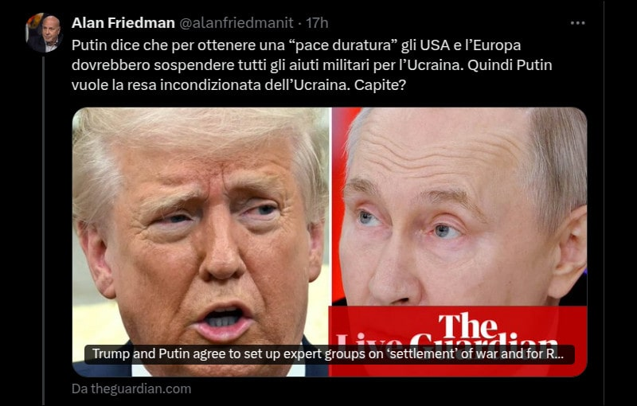

Il punto della situazione
Pubblicato lo stesso giorno come una serie di commenti su X poi raccolti in un post su Facebook.
Non c'è nulla da capire.
Come la Merkel ammise nel tardo 2022, gli accordi di Minsk I e II sono stati siglati sapendo che noi occidentali li avremmo violati, poi G20 a Bali 2023, anche. A questo punto è chiaro che con le buone o le cattive si prendono l'Ucraina per sicurezza.
Ora, mettetevi nei panni dei Russi - o se vi piace di più nei panni di Putin - le uniche condizioni ai tempi di Minsk erano: Ucraina mai nella NATO e accesso al mar Nero tramite la Crimea. Per il resto UA può essere UE.
La Russia era più americana dell'Italia e la UA sarebbe entrata nella UE. Invece NO!
Abbiamo dovuto sorbirci una gestione delinquente della pandemia per forzare il lavoro da remoto e mappare le "risorse umane" in termini di capacità bellica. La più grande esercitazione NATO prima di allora in Ucraina in Q3/2021.
Poi guerra, missili mach 10, game over.
Sorpresi che la Russia voglia mettere in sicurezza l'Ucraina dopo che la CIA l'ha ri-popolata di nazisti, dopo che abbiamo violato patti per 30 anni: non un pollice a est?
Però le sanzioni avrebbero dovuto portare la Russia al fallimento e all'isolamento geopolitico, invece no.
Quindi gli USA hanno fatto le rivoluzioni in Ucraina per instaurare una dittatura militare, la NATO ha fatto la guerra contro la Russia, in Ucraina.
Disfatta su tutti i fronti, eppure si continua a pretendere di poter porre condizioni sulla base della NOSTRA propaganda/agenda?
Insomma, direi che è un po' presuntuoso da parte nostra pensare che i russi siano tutti idioti.
Poi, non è che ci stia andando meglio con gli africani e gli arabi, una volta che questi hanno capito come si devono trattare i "bianchi".
Niger, Houthi, Afghanistan, etc. docet
Sapete qual'è la radice di quest'epica sconfitta e forse del collasso nostra stessa civiltà? Si riassume in una frase, tanto banale quanto letale.
La realtà è una costruzione collettiva. WRONG!
Quella si chiama propaganda, per definizione, e NOI siamo rimasti vittime della NOSTRA propaganda.
Draghi's report vs Ciuchino meme (2024-09-14)
La semplicità delle direttive in caso di crisi (2024-12-29)
Ora sarebbe il caso di mettere sotto processo coloro che ci hanno inebetito riempiendo i media di falsità invece di continuare a pretendere che gli ALTRI si adeguino alle nostre menzogne.
Share alike
© 2025, Roberto A. Foglietta <roberto.foglietta@gmail.com>, CC BY-NC-ND 4.0